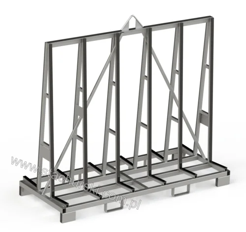

AVAILABLE FROM STOCK / 10 MODELS OFFICIAL CATALOGUE FAMILY
Available from stock
for glass & windows
Selected standard equipment listed as available from stock. Confirm current availability with the team.
10 MODELS / OPTIONS·STACHURSKI / 1974
— IN THIS RANGE
Models and options in the official range
Product references follow Stachurski’s published catalogue. Confirm current availability and configuration with the team.
S↗
AVAILABLE FROM STOCK · PRODUCT FAMILY
Have a model in mind?
Send the model code and your handling requirements to request a tailored quotation.